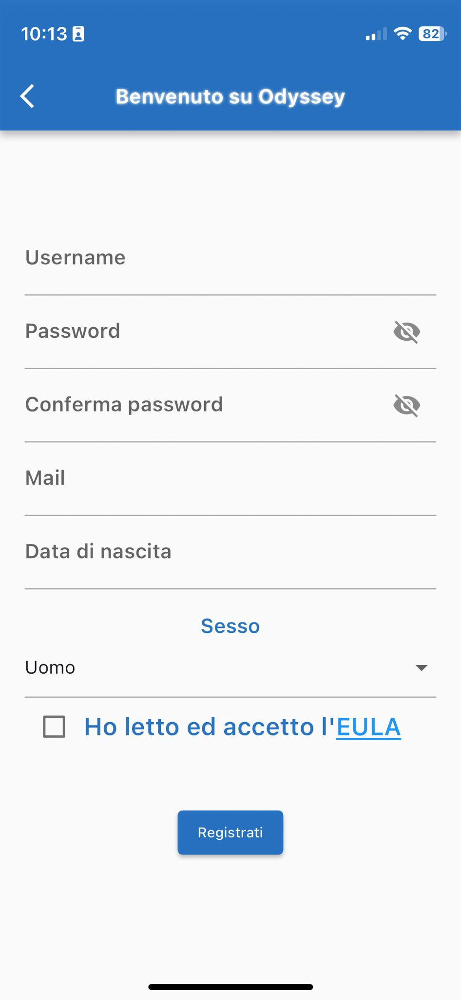
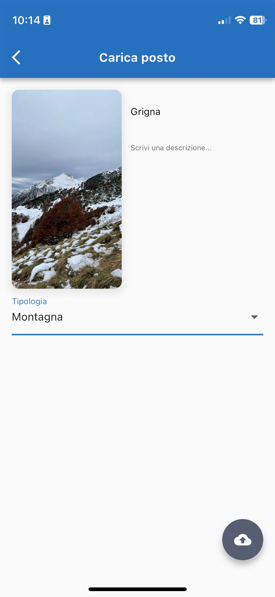
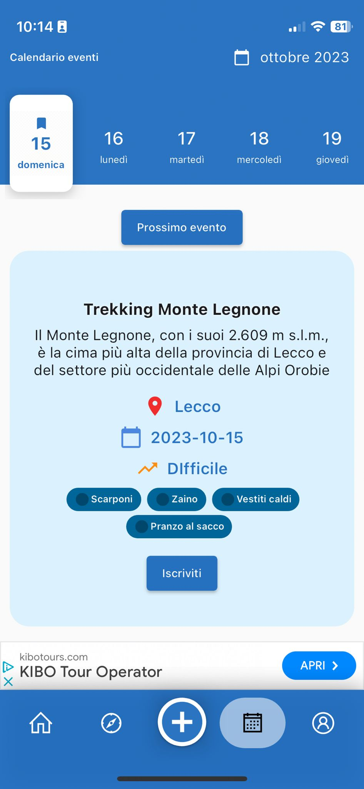
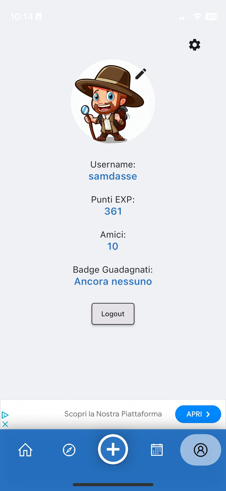

Ecco la spiegazione delle sezioni della nostra app.
Durante la registrazione sarà necessario inserire la tua username, la tua email, la tua password, la data di nascita e il tuo sesso.
La data di nascita è necessaria per verificare che tu sia maggiorenne mentre il sesso sarà necessario per poter scegliere l'avatar giusto per te.
L'EULA è un accordo per l'utilizzo del software da parte nostra nei tuoi confronti.
Nella home troverai una lista di card con posti intorno a te, puoi scorrere e passare al prossimo elemento, oppure scorrendo dal bordo destro dello schermo potrai tornare all'elemento precedente.
Toccando una card si aprirà la sezione con i dettagli, con una descrizione, la possibilità di lasciare un commento e la possibilità di salvare il posto.
In alto a destra c'è un'icona che permette di aprire la sezione delle preferenze.
In alto a sinistra c'è un'icona che simboleggia lo stato del GPS:
La sezione delle preferenze ti permette di modificare:
La sezione esplora contiene:
Per aggiungere un posto che hai visitato dovrai consetire l'accesso alla galleria del telefono.
Dovrai inserire il titolo, la descrizione e la tipologia del posto.
Dopo che l'avrai caricato verificheremo che sia un posto autentico e inseriremo le coordinate della sua posizione e lo renderemo visibile nell'applicazione!
Nel calendario degli eventi potrai vedere gli eventi organizzati, potrai vedere i requisiti necessari per partecipare e la difficoltà.
Schiacciando sul tasto per l'iscrizione potrai iscriverti all'evento, ti contatteremo via mail per fornirti ulteriori informazioni.
Nella sezione del profilo potrai modificare il tuo avatar, vedere il tuo punteggio ed il numero di amici.
Potrai anche eseguire il logout, oppure toccando la rotella in alto a destra cancellare il tuo profilo.
